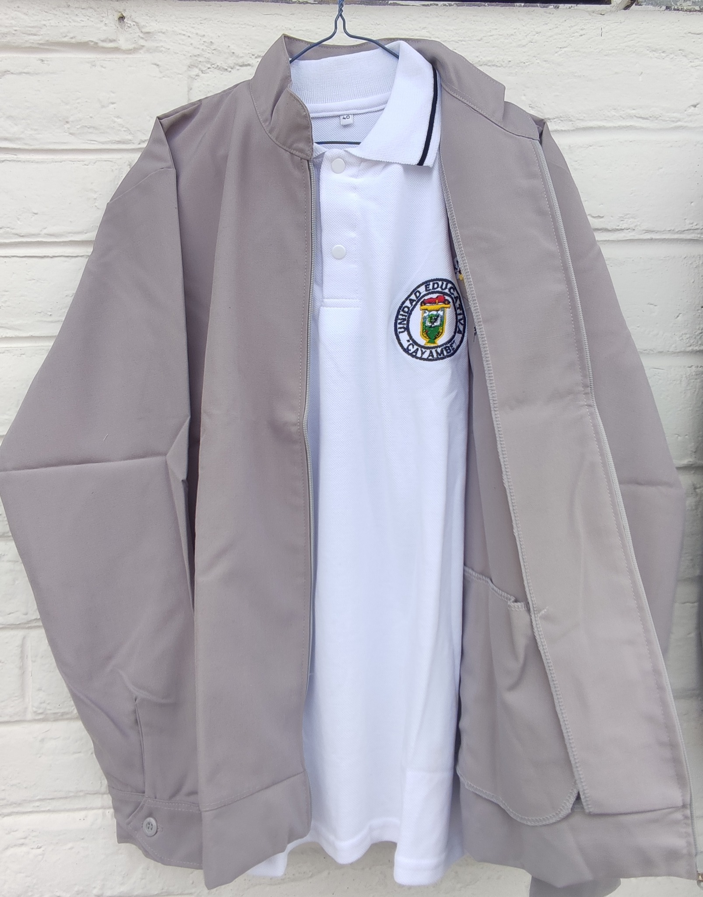
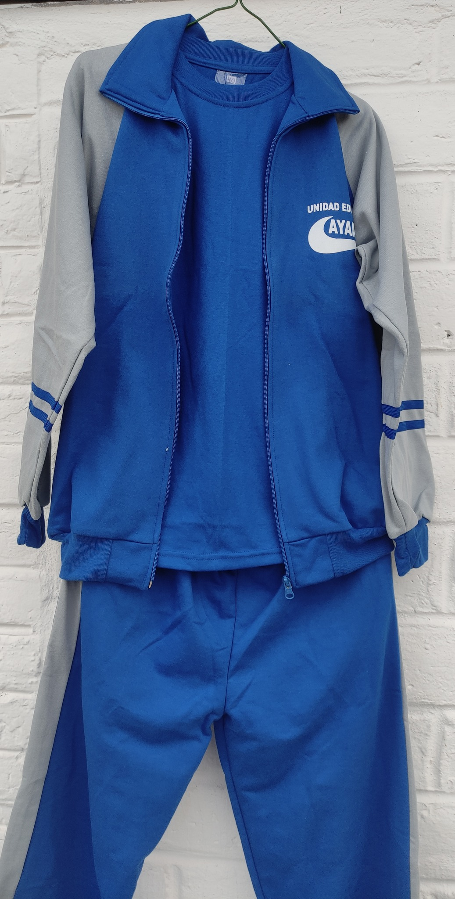
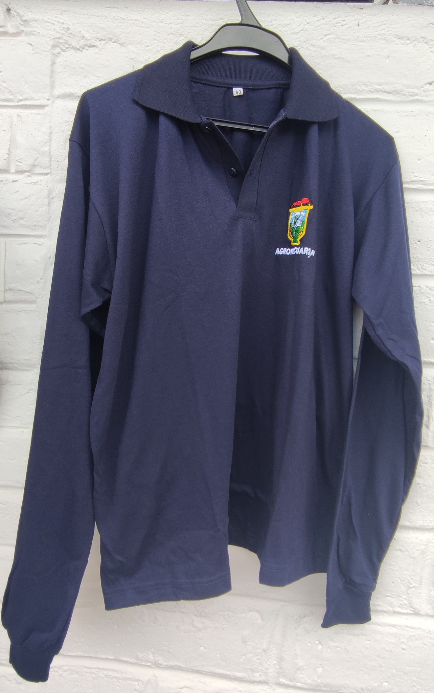

Uniformes
PRESENTACIÓN PERSONAL
.Los estudiantes utilizarán el uniforme completo el mismo debe estar en buen estado, sinrayones, dibujos o logos que lo manchen
Uniforme de parada
Hombres:
Chaqueta corte sastre en casimir 3001 color gris jasp, camisa blanca, escarapela o sello institucional, corbata azul marino, pantalón azul marino zapatos color negro.

Mujeres
Chaqueta corte sastre en casimir 3001 color gris jasp, camisa blanca, escarapela o sello institucional, corbata azul marino, falda recta o pantalón (ancho de la vasta de pantalón 20 cm), azul marino, medias nylon eurocolor, zapatos negros taco muñeca. El alto de lafalda será de 5cm la rodilla. Este uniforme lo deben utilizar durante toda la jornada sinalterarlo

Educacion Fisica
Exterior:
Chompa y pantalón deportivo azul eléctrico y gris clarocon el logo tipo de la institución, (el pantalón o calentador debe tener un ancho de vasta de20cm), zapatos deportivos blancos.
Interior
:Camiseta cuello redondo color azul eléctrico con el logo de la institución, pantaloneta blanca con líneas laterales azul eléctrico y medias azules.

BTP
Chaqueta blanca con bordes azules con el logotipo de la institución, y la especificación BTP, pantalón de casimir azul marino, zapatos negros.
Agropecuaria
Los y las estudiantes de la especialidad Producción Agropecuaria para las prácticas de campo deben utilizar buso azul marino, manga larga con el logo de la institución, pantalón jean azul y zapatos deportivos o botas de acuerdo al requerimiento del Docente.

Derechos y Obligaciones
Obligaciones
1.Cumplir las actividades programadas en el proceso de enseñanza y aprendizaje.
2. Comprometerse con el cuidado y buen uso de todas las instalaciones, bienes yservicios de la institución educativa.
3.Brindar un trato de dignidad y respeto a todos los miembros de la comunidadeducativa.
4.Notificar a las autoridades e institución todo acto de vulnerabilidad a sus derechos yactos de corrupción cometidos por y en contra de un miembro de la comunidadeducativa.
5.Entregar oportunamente los talleres, deberes y trabajos programados por el docente
.6.Cumplir con las tareas de recuperación en el tiempo y fecha establecida por el docente.
7.Entregar puntualmente al departamento del DECE las tareas dirigidas en los casosde: vulnerabilidad, enfermedad o disciplina.
8. Venir correctamente uniformado con el siguiente detalle de uniformes yobservaciones correspondientes.
Derechos:
1.Ser entes participativos en el proceso enseñanza aprendizaje
2.Ser respetados y tratados sin discriminación alguna promoviendo igualdad de género.
3.Participar activa y democráticamente en los procesos de elección estudiantil.
4.Obtener el carnet estudiantil el cual servirá para los diversos eventos dentro y fuerade la Institución.
5.Respeto a su integridad física y moral y su dignidad personal.
6.Mantener en discreción cualquier información personal el cual le concierna única yexclusivamente al estudiante.
7.Solicitar oportunamente explicación adicional cuando la temática no haya sido comprendida.
8.Tener la oportunidad de participar en la recuperación académica planificadas por el Docente o solicitar de manera voluntaria alguna actividad para el mejoramiento desus notas.
9.En los casos de: vulnerabilidad, enfermedad o disciplina recibir las tareas dirigidas por parte del docente de todas las asignaturas a través del DECE.
Dirreccion:Panamericana Sur Km 2 1/2 via Cayambe - El Quinche, Cayambe, Ecuador
Telf: 0958961231-200-2056-12
uecayambe@gmail.com